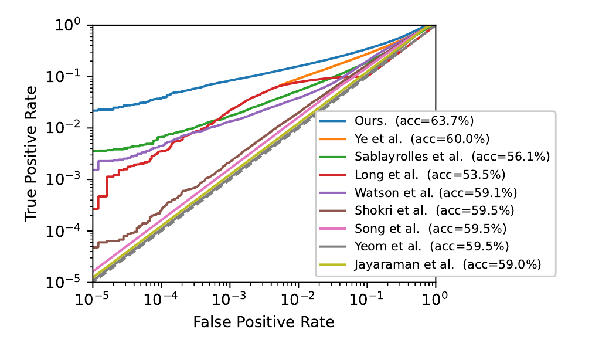
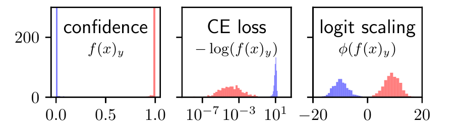
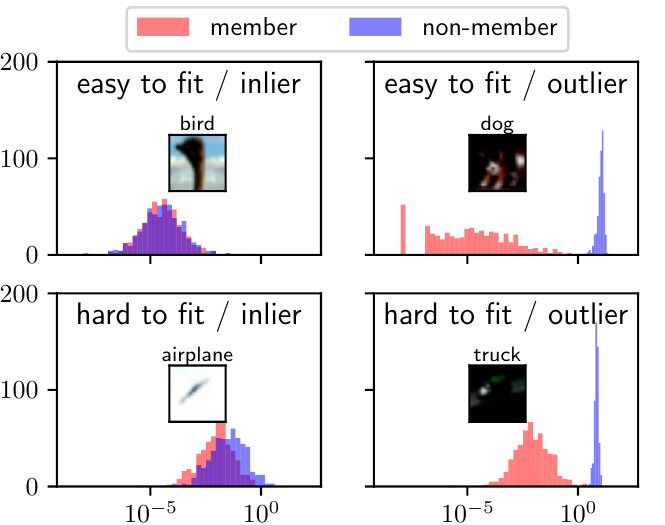
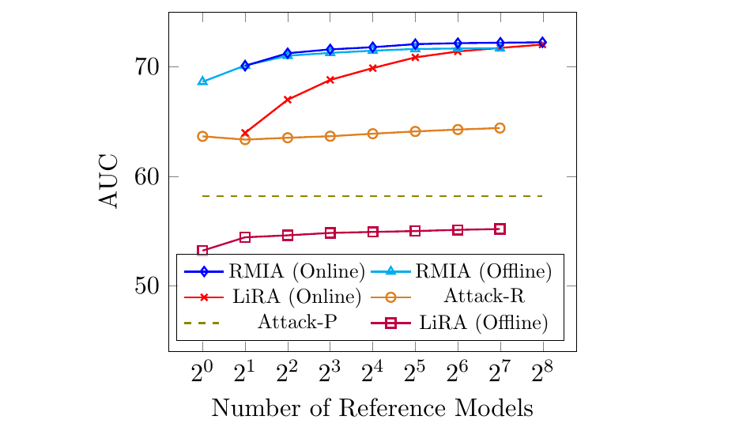
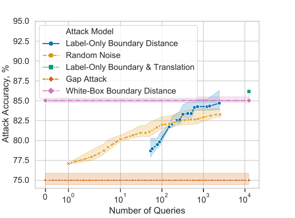
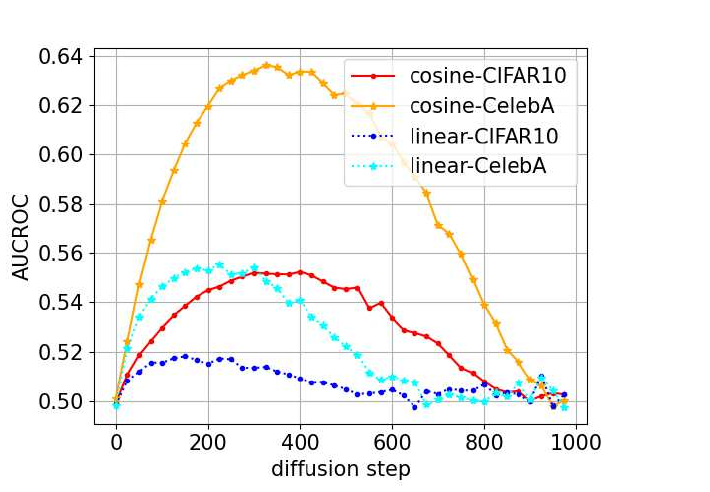

Modern Membership
Inference Attacks
LiRA, the attack hierarchy, RMIA
Albert No · Yonsei University
2026
Contents
Contents (cont.)
From Optimal Test
to Usable Attack
What we already proved, and what is still missing
Recall — the Membership Game
Recall (the game).
Challenger draws $b \sim \mathrm{Bern}(1/2)$, trains $\theta$ on $D$ with target $z$ in ($b=1$) or out ($b=0$).
Recall (the ceiling).
$P_b$ = law of the adversary's observation when $b$ is the bit.
Recall — Every Optimal Attack Is a Ratio Test
Recall (Neyman–Pearson).
Among all tests with $\mathrm{FPR} \le \alpha$, the maximum TPR is attained by
with randomization on the boundary $\Lambda = \tau$.
Recall — The Loss Carries the Signal
Recall (sufficiency, Sablayrolles et al.).
Under the Gibbs posterior $p(\theta \mid D) \propto \exp\!\big(-\tfrac{1}{T}\sum_i \ell(\theta, z_i)\big)$, the optimal membership decision for $z$ depends on $\theta$ only through $\ell(\theta, z)$.
Consequence: a scalar statistic loses nothing in that model.
So the design question is not "what to look at" but "what to compare it against".
Recall — Data Processing for Total Variation
Recall (DPI).
For any channel (randomized map) $K$,
Post-processing never creates membership signal.
Used twice today: the attack hierarchy, and why score-perturbation defenses fail.
The Missing Piece
Three free design choices, and every 2022+ attack is a choice of all three.
Statistic $\phi$
Loss, logit, boundary distance
Conditioning
Per-example? Per-model?
Calibration
Shadows, references, population
Roadmap — One Ratio, Four Estimators
Left to right: the denominator gets more specific to this example.
Cost grows the same way: $0 \to$ population sample $\to R$ models $\to 2R$ models.
Sections 02–04 make this chain precise, then break it.
Recall — Where an Attack Must Be Measured
Recall (the low-FPR critique).
AUC averages over the whole ROC. A privacy threat is an accusation — it lives at $\mathrm{FPR} \le 10^{-3}$.
Report the full curve on log–log axes; quote TPR at fixed small FPR.
Two attacks with equal AUC can differ by orders of magnitude there.
The Picture That Reset the Field

Reading That Curve
All curves are close near $\mathrm{FPR} = 1$; they fan out over four decades below it.
Diagonal = chance. Distance above the diagonal at small FPR is the whole story.
Section 02 builds the attack that produced the top curve.
LiRA
A Parametric Per-Example Test
Carlini, Chien, Nasr, Song, Terzis, Tramèr, IEEE S&P 2022
LiRA in One Line
Run the Neyman–Pearson test, but fit the two densities separately for every target example.
Everything else — Gaussians, logit scaling, offline mode — is machinery for making that affordable.
Definition 1 — The Two Worlds of an Example
Definition 1 (IN / OUT model distributions).
Fix a target $z = (x,y)$ and a training distribution $\mathbb{D}$. Define
$\mathcal{T}$ = the (randomized) training algorithm. Both are distributions over models.
Why the Honest Ratio Is Unusable
Densities over millions of weights. Not estimable from any feasible sample.
Sufficiency (Section 01) says this can be lossless; in practice it is a modelling choice.
Choosing the Scalar — Not the Confidence
Natural candidate: predicted-class probability $p = f_\theta(x)_y \in [0,1]$.
Two defects for a Gaussian model.
Bounded
Mass piles up at $p = 1$ for members. No Gaussian tail can live there.
Skewed
Fitted mean and variance are dominated by the ceiling, not the signal.
Definition 2 — The Logit-Scaled Statistic
Definition 2 (logit scaling).
A diffeomorphism $(0,1) \to \mathbb{R}$; strictly increasing, so it preserves every ordering.
What the Transform Does
Ceiling mass on the left becomes an ordinary tail on the right.
Measured, Not Assumed

Only the third panel is plausibly Gaussian. That is the entire justification.
Definition 3 — The LiRA Statistic
Definition 3 (parametric per-example ratio).
Model, for each target $z$, $\ell \mid \mathrm{in} \sim \mathcal{N}(\mu_{\mathrm{in}}(z), \sigma_{\mathrm{in}}^2(z))$ and $\ell \mid \mathrm{out} \sim \mathcal{N}(\mu_{\mathrm{out}}(z), \sigma_{\mathrm{out}}^2(z))$. The attack score is
Four numbers per example. That is the whole model.
What Is Assumed Here
Assumed
Per-example normality of $\ell$ under both worlds. Empirically motivated, not derived.
Not assumed
Any relation between examples. Every $z$ gets its own four parameters.
Theorem 1 — Closed Form of the LiRA Test
Theorem 1 (Gaussian likelihood ratio).
Write $\mu_{\mathrm{in}}, \sigma_{\mathrm{in}}, \mu_{\mathrm{out}}, \sigma_{\mathrm{out}}$ for the parameters at $z$. Then
(a) If $\sigma_{\mathrm{in}} = \sigma_{\mathrm{out}} = \sigma$, this is affine in $\ell$. (b) Otherwise it is a genuine quadratic.
Proof of Theorem 1 — Outline
- Write both Gaussian densities and take logarithms.
- Collect powers of $\ell$: the log-ratio is $A\ell^2 + B\ell + C$.
- Set $\sigma_{\mathrm{in}} = \sigma_{\mathrm{out}}$ and watch $A$ vanish.
Nothing deep. The point is what the resulting formula is.
Proof of Theorem 1 — Step 1, Take Logs
The $\sqrt{2\pi}$ cancels in the ratio; the $\sigma$ factors do not.
Proof of Theorem 1 — Step 2, Collect Powers
Case (b) is now immediate: $A \neq 0$ whenever $\sigma_{\mathrm{in}} \neq \sigma_{\mathrm{out}}$.
Proof of Theorem 1 — Step 3, Equal Variances
Put $\sigma_{\mathrm{in}} = \sigma_{\mathrm{out}} = \sigma$. Then $A = 0$ and
Affine in $\ell$, increasing exactly when $\mu_{\mathrm{in}} \gt \mu_{\mathrm{out}}$. $\qquad \blacksquare$
Proof of Theorem 1 — Recap
(1) logs of Gaussian densities · (2) collect powers of $\ell$ · (3) equal variances, so $A = 0$
Corollary 1 — A Calibrated z-Score
Corollary 1 (equal-variance LiRA).
Set $z(\ell) = \dfrac{\ell - \mu_{\mathrm{out}}}{\sigma}$ and the effect size $d = \dfrac{\mu_{\mathrm{in}} - \mu_{\mathrm{out}}}{\sigma}$. Then
The score is the per-example z-score, weighted by how separable that example is.
Proof of Corollary 1
Two consequences on the next slides: within an example, and across examples.
Two Readings of $\log\Lambda = dz - \tfrac{1}{2}d^2$
Within one example
$d$ is a constant, so thresholding $\log\Lambda$ and thresholding $z$ give the same decisions.
Across examples
$d = d(z)$ varies. Ranking by $\log\Lambda$ is not ranking by $z$.
The Per-Example Picture
Why Calibration Is Not Cosmetic
A global-threshold attack fires when $\ell^\ast \ge t$, with one $t$ for all examples.
Its null is not a Gaussian: it is a mixture over examples.
The calibrated attack's null is $\mathcal{N}(0,1)$ for every $z$.
One Threshold, Three Examples
The global budget is spent almost entirely on the rightmost example.
Proposition 1 — Calibration Dominates
Proposition 1 (equal-effect-size case).
Suppose every example has the same effect size $d \gt 0$, so its per-example ROC is $R(a) = \Phi(\Phi^{-1}(a) + d)$. Let an attack have conditional FPRs $\alpha(z)$ with $\int \alpha(z)\, d\pi = \alpha$. Then
with equality iff $\alpha(z) = \alpha$ almost surely.
Proof of Proposition 1 — Outline
- Both attacks threshold $\ell$ within a fixed example, so both sit on the same per-example ROC.
- Show that ROC $R$ is strictly concave.
- Apply Jensen to $\int R(\alpha(z))\,d\pi$.
The calibrated attack is the unique one with a flat FPR profile.
Proof of Proposition 1 — Step 1, Same Curve
Fix $z$. Under OUT, $\ell \sim \mathcal{N}(\mu_{\mathrm{out}}, \sigma^2)$; under IN, $\mathcal{N}(\mu_{\mathrm{out}} + \sigma d, \sigma^2)$.
A test that fires when $\ell \ge t$ has
So $\mathrm{TPR}(z) = R(\alpha(z))$ for global and calibrated alike.
Proof of Proposition 1 — Step 2, Concavity
Differentiate $R(a) = \Phi(\Phi^{-1}(a) + d)$ using $\frac{d}{da}\Phi^{-1}(a) = 1/\phi(\Phi^{-1}(a))$, with $u = \Phi^{-1}(a)$.
$u = \Phi^{-1}(a)$ increases in $a$ and $d \gt 0$, so $R'$ is strictly decreasing.
Hence $R$ is strictly concave on $(0,1)$.
Proof of Proposition 1 — Step 3, Jensen
Strict concavity gives equality only for a constant FPR profile.
The calibrated test $z(\ell) \ge \Phi^{-1}(1-\alpha)$ has $\alpha(z) \equiv \alpha$, so it attains the bound. $\qquad \blacksquare$
Proof of Proposition 1 — Recap
(1) common per-example ROC · (2) Jensen, $R$ strictly concave · (3) FPR budget · (4) flat profile of the z-score test
How Large Is the Loss? A Worked Instance
Toy model: $\sigma = 1$, $d = 2$, and $\mu_{\mathrm{out}}(z) \sim \mathcal{N}(0,1)$ across examples.
Worked toy arithmetic, not a benchmark: 15$\times$ at $\mathrm{FPR}=10^{-3}$, and no gap at all at $\mathrm{FPR}=\tfrac12$.
Per-Example Distributions Really Do Move

Recall — Where the Four Numbers Come From
Recall (shadow models as an estimator).
Resampled training runs are Monte Carlo draws from the two conditionals. A wrong family costs at most
For LiRA: the price of the Gaussian is bounded by its TV distance to the true per-example law.
Online LiRA — The Procedure
- Repeat $N$ times: sample $D \sim \mathbb{D}$, train $f_{\mathrm{in}} \leftarrow \mathcal{T}(D \cup \{z\})$ and $f_{\mathrm{out}} \leftarrow \mathcal{T}(D \setminus \{z\})$.
- Collect $\varphi(f_{\mathrm{in}}(x)_y)$ and $\varphi(f_{\mathrm{out}}(x)_y)$.
- Estimate $\hat\mu_{\mathrm{in}}, \hat\sigma^2_{\mathrm{in}}, \hat\mu_{\mathrm{out}}, \hat\sigma^2_{\mathrm{out}}$.
- Score the target model by $\Lambda$ of Definition 3 at $\ell^\ast = \varphi(f_\theta(x)_y)$.
Definition 4 — Offline LiRA
Definition 4 (offline attack).
Train shadow models once, none containing $z$. Only $\hat\mu_{\mathrm{out}}(z), \hat\sigma_{\mathrm{out}}(z)$ are available. The score is
One shadow population serves every target. That is what makes it deployable.
Proposition 2 — Offline LiRA Is a One-Sided z-Test
Proposition 2.
$\Lambda_{\mathrm{off}} = \Phi\big(z(\ell^\ast)\big)$, so thresholding $\Lambda_{\mathrm{off}}$ at $1-\alpha$ is exactly the level-$\alpha$ one-sided test of
and this test is uniformly most powerful within the Gaussian location family.
Proof of Proposition 2
$\Phi$ is strictly increasing, so $\{\Lambda_{\mathrm{off}} \ge 1-\alpha\} = \{z(\ell^\ast) \ge \Phi^{-1}(1-\alpha)\}$.
The Gaussian location family has monotone likelihood ratio in $\ell$; Karlin–Rubin then gives UMP. $\qquad \blacksquare$
Note $1 - \Lambda_{\mathrm{off}}$ is a one-sided p-value against the OUT null.
Offline Tail vs Online Region
Case (b) of Theorem 1: the accept region is an interval, so the reject region is two-sided.
Cost and Power — Online vs Offline
| Mode | Models needed | Parameters fitted | Reported gap |
|---|---|---|---|
| Online | IN and OUT shadows per target | Four per example | Best power |
| Offline | One OUT shadow population, reused | Two per example | TPR at most 20% lower |
Gap measured at FPR $=10^{-3}$ with the same number of shadow models.
Reported TPR at 0.1% FPR
| Attack | CIFAR-10 | CIFAR-100 | WikiText-103 |
|---|---|---|---|
| Yeom et al. | 0.0% | 0.0% | 0.1% |
| Shokri et al. | 0.3% | 1.6% | — |
| Sablayrolles et al. | 1.7% | 7.4% | 1.0% |
| Watson et al. | 1.3% | 5.4% | 1.1% |
| LiRA | 8.4% | 27.6% | 1.4% |
Reported TPR at 0.001% FPR
| Attack | CIFAR-10 | CIFAR-100 | WikiText-103 |
|---|---|---|---|
| Yeom et al. | 0.0% | 0.0% | 0.00% |
| Sablayrolles et al. | 0.1% | 0.8% | 0.01% |
| Watson et al. | 0.1% | 0.9% | 0.02% |
| LiRA | 2.2% | 11.2% | 0.09% |
Four decades below the usual operating point, several baselines are at zero.
The Same Attacks, Judged by Accuracy
| Attack | CIFAR-10 | CIFAR-100 | WikiText-103 |
|---|---|---|---|
| Watson et al. | 59.1% | 70.1% | 65.4% |
| Ye et al. | 60.3% | 76.9% | 65.5% |
| LiRA | 63.8% | 82.6% | 65.6% |
What the Gaussian Buys
A non-parametric per-example null needs enough samples to resolve its own tail.
A two-parameter fit needs enough samples to resolve a mean and a variance.
The modelling assumption is where the compute saving comes from — and where the risk sits.
Section 02 — What Is Settled
Calibration is provably optimal among fixed-budget threshold attacks (Proposition 1).
Offline mode is a one-sided z-test (Proposition 2); online additionally learns $d(z)$.
Open: is per-example conditioning the only axis that matters?
The Attack Hierarchy
Nested Conditioning
Ye, Maddi, Shokri et al., ACM CCS 2022
The Problem: A Zoo of Attacks
By 2022: loss thresholds, shadow classifiers, entropy scores, reference models, LiRA.
Two questions with no clean answer.
Same or different?
Genuinely distinct tests, or one test with different estimators?
Which to audit with?
Without an ordering, the audit number is arbitrary.
Definition 5 — One Template for All of Them
Definition 5 (thresholded loss test).
Given the released model $\theta$ and target $z = (x_z, y_z)$, declare "member" iff
where $c_\alpha$ is a threshold calibrated to false-positive rate $\alpha$.
Sign convention here: low loss means member. Opposite to the logit of Section 02.
Lemma 1 — Why That Template Is Not Arbitrary
Lemma 1 (approximated LRT, Ye et al.).
Under their Appendix-A modelling assumptions, the likelihood-ratio test for membership reduces to the loss threshold
Same conclusion as the sufficiency result of Section 01, reached from a different set of assumptions.
Read the Fine Print
So the template is a modelling frame, not a theorem about real training.
Everything below orders attacks within that frame.
Definition 6 — Four Conditioning Sets
| Attack | Threshold depends on | What is swept |
|---|---|---|
| S — per-label | $y_z$ | Records of the same class |
| P — population | $\theta$ | Population records, model fixed |
| R — reference | $x_z, y_z$ | Reference models, record fixed |
| D — distillation | $\theta,\, x_z,\, y_z$ | Both |
The Population Out-World
Fix the released model $\theta_0$ and the dataset. Draw fresh records from the population.
Calibrate $c_\alpha(\theta_0)$ as the $\alpha$-quantile of $\ell(\theta_0, z)$ over those draws.
The Reference Out-World
Fix the target record $z_0$. Draw fresh datasets and train reference models on them.
Calibrate $c_\alpha(x_{z_0}, y_{z_0})$ as the $\alpha$-quantile of $\ell(\theta_i, z_0)$ over those models.
Two Ways to Sweep
Why the Distinction Bites
A textbook-perfect record has low loss whether or not it was trained on.
An outlier has high loss either way.
Population null
Pooled across records. Cannot see either asymmetry.
Reference null
Centred on this record. Both asymmetries vanish.
Theorem 2 — Richer Conditioning Cannot Hurt
Theorem 2 (monotonicity in the conditioning set).
For a conditioning set $V$, let $\mathcal{C}_V$ be the tests whose threshold is a measurable function of $V$, and let $\beta_V(\alpha)$ be the best TPR over $\mathcal{C}_V$ at FPR $\le \alpha$. If $V \subseteq V'$ then
A statement about optima, not about any particular estimator.
Proof of Theorem 2 — Outline
- Nesting: $V \subseteq V'$ makes $\mathcal{C}_V$ a subset of $\mathcal{C}_{V'}$.
- The supremum over a larger set is larger.
- Restate in total variation: the coarser observation is a channel applied to the finer one.
Step 3 is the version that connects to the data-processing inequality of Section 01.
Proof of Theorem 2 — Step 1, Nesting
A test in $\mathcal{C}_V$ has the form $\mathbf{1}\big[\ell \le c(V)\big]$ for some measurable $c$.
If $V \subseteq V'$, that same $c$ is also a measurable function of $V'$ — it simply ignores the extra coordinates.
The FPR constraint is the same marginal constraint in both classes.
Proof of Theorem 2 — Step 2, Take Suprema
Both feasible sets impose the identical FPR budget, so no constraint is relaxed except membership. $\qquad \blacksquare$
Proposition 1 is the quantitative version: the gain equals the concavity gap of the ROC.
Proof of Theorem 2 — Step 3, In Total Variation
Let $O_{V'}$ be the finer observation and $O_V = g(O_{V'})$ the coarser one.
By the ceiling of Section 01, this bounds the maximum achievable advantage in the same order.
Data processing, applied to the adversary's own view rather than to a defense.
Proof of Theorem 2 — Recap
(1) definition · (2) $\mathcal{C}_V \subseteq \mathcal{C}_{V'}$ · (3) definition · (4) same fact in TV, by data processing
The Ordering Is Partial, Not Total
P and R are incomparable: neither conditioning set contains the other.
What Theorem 2 Does Not Say
Not about estimators
It orders optima, not the specific attacks people run.
Not finite-sample
A richer threshold must be estimated, and noisy estimates lose.
Not a total order
P and R sit side by side, not stacked.
What They Measured
Attack S and Attack P perform comparably in their experiments.
Attack R dominates Attack S on a large minority of inputs.
Attack D dominates Attack R in their per-record scatter comparison.
And an Inversion in the Wild
No contradiction with Theorem 2: offline LiRA is one estimator inside class D, not the optimum of class D.
The lesson for auditing: run several tiers, report the maximum.
Auditing in Practice
The taxonomy turns "which attack should I run?" into a checklist.
Privacy Meter runs population, reference, and per-record attacks side by side and reports per-sample risk.
Section 03 — What Is Settled
Every attack in the literature is one template with a differently conditioned threshold.
Conditioning sets are partially ordered by inclusion; optima are monotone along it (Theorem 2).
RMIA
Pairwise Ratios, Few Models
Zarifzadeh, Liu, Shokri, ICML 2024
The Complaint About LiRA
LiRA's score needs a per-example scale $\sigma(z)$, not just a location.
Scales are second moments. Second moments need samples, and each sample is a full training run.
Proposition 3 — The Scale Is the Bottleneck
Proposition 3 (relative error of a fitted scale).
For $\ell_1, \dots, \ell_R$ i.i.d. $\mathcal{N}(\mu, \sigma^2)$ with sample standard deviation $\hat\sigma$,
Compare with the location: $\mathrm{sd}(\hat\mu)/\sigma = 1/\sqrt{R}$, a strictly smaller constant.
Proof of Proposition 3
The sample variance obeys $(R-1)\hat\sigma^2/\sigma^2 \sim \chi^2_{R-1}$, whose variance is $2(R-1)$.
Delta method with $g(v) = \sqrt{v}$, $g'(\sigma^2) = 1/(2\sigma)$:
What That Costs in Practice
| Reference models | Relative error of the fitted scale |
|---|---|
| 4 | 41% |
| 16 | 18% |
| 64 | 8.9% |
| 256 | 4.4% |
On-slide arithmetic from Proposition 3. A z-score divided by a 41%-uncertain scale is not a calibrated score.
Definition 7 — The Pairwise Likelihood Ratio
Definition 7 (RMIA ratio).
For the target $x$ and a reference point $z$ drawn from the population,
"Is $\theta$ better explained by having trained on $x$, or on $z$?"
A ratio between two competing membership hypotheses, not between member and non-member.
The Computable Form
Bayes on numerator and denominator, with the $\Pr(\theta)$ factors cancelling:
$\Pr(x \mid \theta)$ is one forward pass: the softmax score of $\theta$ at the labelled point.
What $\Pr(x)$ Actually Is
An average of the point's score over the model prior — not the data prior $\pi(x)$.
Online
Half the reference models trained with $x$, half without, so the average is unbiased.
Offline
Only OUT models; the average is rescaled to compensate.
Definition 8 — The RMIA Score
Definition 8 (population rank).
The fraction of population points that $x$ beats by a factor of at least $\gamma$.
At $\gamma = 1$: the quantile of $\Pr(x\mid\theta)/\Pr(x)$ within the population's own distribution of that ratio.
The Score Is a Rank
No per-example density is fitted anywhere in this picture.
Where the Sample Size Comes From
LiRA
Effective sample = number of models. Each one is a training run.
RMIA
Effective sample = number of population points. Each one is a forward pass.
Mechanism sketch, not a theorem: the paper's evidence for it is empirical.
AUC Against Reference-Model Budget

Four Reference Models, CIFAR-10
| Attack | AUC | TPR at 0.01% FPR | TPR at 0% FPR |
|---|---|---|---|
| Attack-R | 63.52% | 0.65% | 0.21% |
| LiRA (offline) | 54.60% | 0.97% | 0.57% |
| LiRA (online) | 67.00% | 1.38% | 0.51% |
| RMIA (offline) | 71.02% | 2.91% | 2.13% |
With a Large Reference Budget, CIFAR-10
| Attack | AUC | TPR at 0.01% FPR | TPR at 0% FPR |
|---|---|---|---|
| Attack-P | 58.19% | 0.01% | 0.00% |
| Attack-R | 64.41% | 1.52% | 0.80% |
| LiRA (offline) | 55.18% | 1.37% | 0.72% |
| RMIA (offline) | 71.71% | 4.18% | 3.14% |
| RMIA (online) | 72.25% | 4.31% | 3.15% |
The Low-Budget Regime
With one reference model: at least 24% higher AUC than LiRA across their datasets.
With two CIFAR-10 reference models: around 10% higher AUC than both Attack-R and LiRA.
With four CIFAR-10 models: at least 6% higher AUC than online LiRA.
A Warning About Cross-Paper Numbers
The two papers use different architectures, training recipes, and splits.
This is the single most common error in MIA literature reviews.
Section 04 — What Is Settled
RMIA keeps the ratio but changes the reference: population points instead of world hypotheses.
It fits no per-example scale, so Proposition 3's penalty never applies.
Label-Only Access
Distance as a Statistic
Choquette-Choo, Tramèr, Carlini, Papernot, ICML 2021
The Stingiest API
Return only $\arg\max_k f_\theta(x)_k$. No probabilities, no logits, no ranking.
Every statistic used so far is now unavailable.
This section shows the hope is false, and says exactly why.
Definition 9 — Boundary Distance
Definition 9 (attack statistic).
set to $0$ when $x$ is already misclassified. Declare "member" iff $d_\theta(x,y) \gt \tau$.
Computable from labels alone: it only asks whether the predicted class has changed.
Proposition 4 — Distance Is the Logit in Disguise
Proposition 4 (linear case).
Let $h(x) = \sigma(w^\top x + b)$ be a logistic model, $\sigma$ the sigmoid. Then the distance from $x$ to the decision boundary is
with $\varphi = \sigma^{-1}$ the logit map of Definition 2.
Proof of Proposition 4
The boundary is the hyperplane $H = \{u : w^\top u + b = 0\}$. The signed point-to-hyperplane distance is
Inverting the sigmoid, $\sigma^{-1}(h(x)) = \log\dfrac{h(x)}{1 - h(x)} = w^\top x + b = \varphi(h(x))$.
Substituting gives the claim. $\qquad \blacksquare$
Corollary 2 — Nothing Was Hidden
Corollary 2.
$\|w\|_2$ is a positive constant of the model, so $d$ is a strictly increasing function of $\varphi(h(x))$. Thresholding $d$ and thresholding the logit define the same family of decisions.
The Geometry
Members sit further inside their own class region. That is all the attack needs.
Beyond the Linear Case
For a deep network no such identity holds.
The paper's position: near a data point the network is approximately linear, so the monotone link approximately survives.
Estimating $d$ From Labels Alone
- Find any point $x'$ that the model labels differently from $x$.
- Binary-search along the segment $[x, x']$ for the label flip.
- Move the boundary point tangentially to shorten $\|x' - x\|$, and repeat.
Choquette-Choo et al. use HopSkipJump; the white-box reference point is Carlini–Wagner.
Query Complexity, Reported
Around 2,500 queries: matches the white-box boundary attack, which itself uses about 2,000.
Around 12,500 queries: the combined attack outperforms all others they test.
Under 100 queries: still beats the trivial gap baseline by about 4 percentage points.
Accuracy Against Query Budget

Two Cheaper Proxies for Distance
Noise robustness
Accuracy of $\theta$ on $x + \mathcal{N}(0,\sigma^2 I)$. Under 300 queries, it beats the boundary walk.
Augmentations
Rotations by $\pm r$ degrees, or translations at offset $d$. Query cost is a handful.
Section 05 — What Is Settled
Boundary distance is a label-computable statistic that is provably the logit for linear models.
The cost of hiding scores is query budget, not security.
Defenses
Training, Not Output
DP-SGD, and a proof that post-processing cannot save you
Four Families
Regularization
Weight decay, dropout, early stopping. Shrinks the train/test gap.
Output perturbation
Rounding, temperature, adversarial confidence noise.
Training-time noise
DP-SGD, PATE, private distillation.
Architecture and data
Capacity limits, deduplication, subsampling.
One Question Sorts Them All
Only the first can lower the ceiling $\mathrm{TV}(P_1, P_0)$.
The rest of this section proves that sentence, then instantiates it.
Definition 10 — The DP-SGD Update
Definition 10 (noisy clipped gradient step).
Two knobs: the clipping norm $C$ bounds influence, the multiplier $\sigma$ buys privacy.
Why Those Two Operations
Clip
Bounds one example's contribution by $C/B$: a finite sensitivity.
Add noise
Gaussian mechanism at that sensitivity gives a per-step guarantee.
Account
Compose across steps and subsampling into one $(\varepsilon,\delta)$.
Without clipping there is no sensitivity bound, and the noise calibrates to nothing.
Clip, Then Blur
Recall — What $(\varepsilon,\delta)$ Buys Against MIA
Recall (DP trade-off region).
If the training algorithm is $(\varepsilon,\delta)$-DP, then every membership attack obeys
A cap on the whole ROC curve, not on one operating point.
The Cap at $\mathrm{FPR} = 10^{-3}$
| Epsilon | Cap on TPR at FPR 0.1% | Reading |
|---|---|---|
| 1 | 0.28% | Binding: below Section 02's 8.4% |
| 4 | 5.5% | Still binding, barely |
| 8 | above 100% | Vacuous |
Arithmetic: $e^{\varepsilon}\cdot 10^{-3} + 10^{-5}$ with $\delta = 10^{-5}$.
What DP-SGD Does Not Give
Not a tight bound
The cap is worst-case over all datasets and all adversaries.
Not free
Utility falls as $\varepsilon$ falls; the frontier is application-specific.
Not per-example
One $\varepsilon$ for everyone, including the outliers that leak most.
Measured leakage is a lower bound; the DP cap is an upper bound. They rarely meet.
Proposition 5 — Post-Processing Defenses
Proposition 5 (preserved channels are untouched).
Let $O$ be the undefended observation and let the defense release $K(O)$ for a randomized map $K$. Suppose some function $g$ is preserved: $g(K(O)) = g(O)$ almost surely. Then
Proof of Proposition 5
Right inequality: $K$ is a channel applied to $O$, so data processing applies directly.
Left inequality: by hypothesis $g(O) = g(K(O))$, so $g(O)$ is a deterministic function of $K(O)$ — another channel.
Chaining the two gives the statement. $\qquad \blacksquare$
Corollary 3 — The Trap
Corollary 3.
An adversary whose statistic sees $O$ only through the preserved $g$ has exactly the same advantage after the defense.
A defense that leaves the predicted label intact leaves every label-only attack intact.
The Channel Diagram
MemGuard, as Predicted
MemGuard perturbs the confidence vector adversarially while leaving the predicted label unchanged.
That is exactly the hypothesis of Corollary 3 with $g = \arg\max$.
Defenses, Sorted by the Right Question
| Defense | Changes the model | Formal guarantee | Survives Corollary 3 |
|---|---|---|---|
| Rounding, temperature | No | No | No |
| MemGuard | No | No | No |
| Regularization | Yes | No | Partly |
| DP-SGD | Yes | Yes | Yes |
"Partly": regularization shrinks the gap without bounding any adversary.
The Evaluation Standard
Testing a defense against the attack it was designed to beat proves nothing.
Report the strongest attack in the threat model, at low FPR, after the defense is public.
Section 06 — What Is Settled
DP-SGD caps the entire ROC curve, and the cap goes vacuous around $\varepsilon = 8$.
Output filtering is a channel; Proposition 5 says a preserved channel keeps its full leakage.
Beyond Classification
Diffusion Models
Choosing a statistic when there is no loss on a label
What Breaks
Every attack so far scored a record by its loss on its label.
A diffusion model has no label — instead a family of losses indexed by noise level $t$.
Recall — The Denoising Objective
Recall (forward process and training loss).
$\bar\alpha_t$ falls from $1$ to $0$: a signal-to-noise dial, not a time.
Definition 11 — Per-Timestep Statistic
Definition 11 (reconstruction loss at a fixed noise level).
Fix $t$, fix the draw of $\epsilon$, score the record by how well the model denoises it.
The training loss averages over $t$; the attack need not.
Why Fix $t$ Rather Than Average
Averaging over $t$ pools channels with different effect sizes $d$.
Section 02's Proposition 1 already said what pooling costs at low FPR.
Where the Signal Lives
Schematic, not measured data.
The Two Endpoints — Intuition
Small $t$, so $\bar\alpha_t \to 1$: $x_t \approx x_0$ and denoising is near-trivial. IN and OUT losses both sit near zero.
Large $t$, so $\bar\alpha_t \to 0$: $x_t$ retains almost nothing of $x_0$. Every model falls back on the prior.
Informal: continuity in $t$ is an assumption, not a proved property of trained networks.
Measured: AUC Against Timestep

Where the Peak Is
With $T = 1000$, AUCROC is maximised at $t = 350$ under the cosine schedule and $t = 200$ under the linear schedule.
The dial that matters is $\bar\alpha_t$; $t$ is only its schedule-dependent index.
How Strong Is the Signal
| Schedule and data | AUC at best t | AUC averaged over t |
|---|---|---|
| Cosine, CIFAR-10 | 0.552 | 0.535 |
| Cosine, CelebA | 0.636 | 0.597 |
| Linear, CIFAR-10 | 0.518 | 0.510 |
| Linear, CelebA | 0.555 | 0.529 |
Reading Those Numbers Honestly
AUC near $0.55$ is a weak average-case signal — and Section 01 called AUC the wrong lens entirely.
The same paper reports its black-box variant failing on every model and dataset tested.
Porting the Recipe
- Pick $t$ with $\bar\alpha_t \approx 0.7$; fix the noise draw $\epsilon$ across all models.
- Train reference models; record $\phi_t$ for the target record on each.
- Fit the OUT distribution of $\phi_t$; convert the target's $\phi_t$ to a $z$-score.
- Threshold the $z$-score; report TPR at low FPR.
Step 1 is the only diffusion-specific line. Steps 2 to 4 are Section 02 verbatim.
Section 07 — What Is Settled
A generative model supplies a family of statistics; the attacker picks a channel, then calibrates as before.
For diffusion the channel is a fixed noise level, selected by $\bar\alpha_t$ rather than by $t$.
Synthesis
One Estimator, Many Disguises
What changes between attacks, stated precisely
The Template
Every attack in this series.
Three free choices: the statistic $\phi$, the conditioning set $\mathcal{C}$, and how the two densities are estimated.
What Actually Changed, 2017 to 2024
The statistic barely moved: it has been the loss, or a monotone transform of it, throughout.
Attacks Without Reference Models
| Attack | Statistic | Conditioning | Calibration |
|---|---|---|---|
| Yeom | Loss | None | Global threshold |
| Shokri | Confidence vector | Class label | Learned per class |
| Attack-P | Loss | Population sample | Population quantile |
| Label-only | Boundary distance | None | Shadow-tuned $\tau$ |
Attacks With Reference Models
| Attack | Statistic | Conditioning | Calibration |
|---|---|---|---|
| Attack-R | Loss | Record $(x_z,y_z)$ | Reference empirical CDF |
| LiRA offline | Logit-scaled loss | Record | One-sided Gaussian $z$ |
| LiRA online | Logit-scaled loss | Record | IN/OUT Gaussian pair |
| RMIA | Pairwise ratio | Record and population | Rank against $z \sim \pi$ |
Proved in This Lecture
| Result | Content |
|---|---|
| Theorem 1 | Gaussian LR is quadratic; equal variances collapse it to a $z$-score |
| Proposition 1 | Per-example calibration dominates any pooled threshold at fixed FPR |
| Theorem 2 | More conditioning cannot hurt — a partial order, not a ranking |
| Proposition 4 | Boundary distance is the logit for linear models |
| Proposition 5 | Post-processing leaves preserved channels fully exposed |
Claimed, Not Proved
Gaussianity
A modelling assumption on the logit-scaled loss, justified empirically.
RMIA's edge
Reported AUC and TPR gains at small $R$; not a theorem.
Diffusion peak
Endpoint argument is intuition; the location of the peak is measured.
Keeping this line visible is the difference between auditing and advertising.
If You Have to Run One
Large budget
LiRA online, per-example variances, report TPR at low FPR.
Small budget
RMIA with a handful of reference models.
No budget
Attack-P as a floor; treat the result as a lower bound only.
Where the Recipe Runs Out
Every calibrated attack here needs at least one model trained without the target record.
For a pre-trained language model, retraining once is out of reach, and the training set cannot be enumerated.
Next: Membership Inference in LLMs